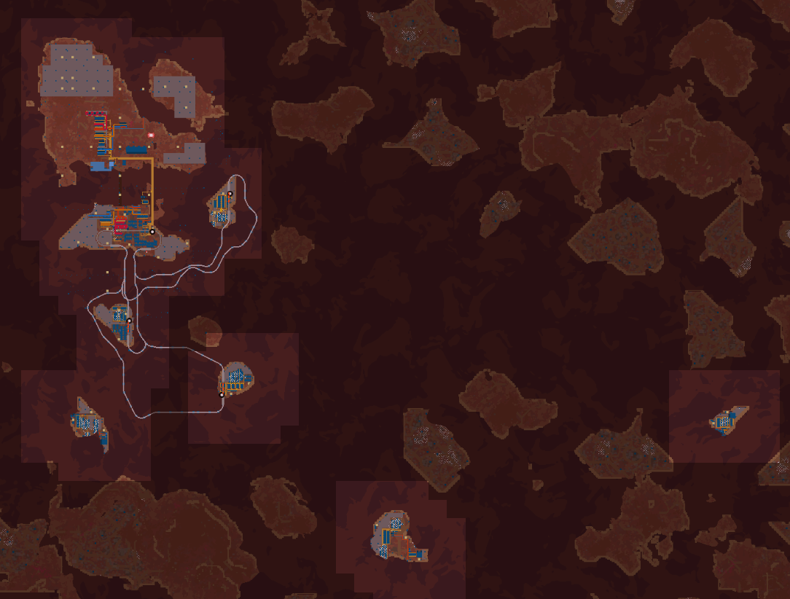

Fulgora
Fulgora began as a main island connected to three recycling islands by train. As off-world demand for recycled parts grew, three recycling islands connected only by rocket silo were added. After foundation became available, the main island expanded north to another two islands and the Holmes space platform allowed Holmium to be centralized via rocket and orbital drop.
Independent Recycling Island

Symbolic Map
